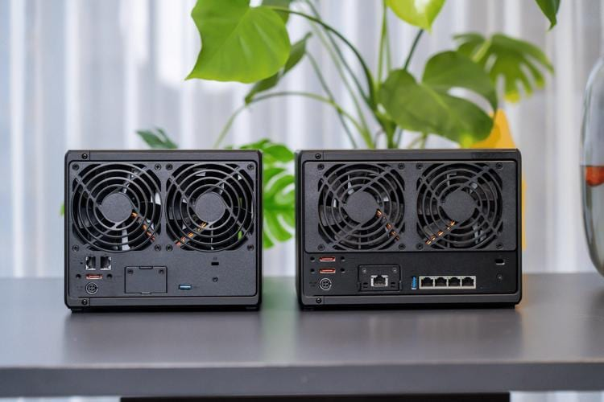

群晖 DS923+

群晖 4 盘位主力机型，AMD 双核与 DSM 系统的组合主打稳定可靠，可加内存、加 SSD 缓存、接扩展柜，是中小企业与家庭进阶用户的经典之选，也是许多人的第一台正经 NAS。
客观评测
DS923+ 采用 AMD Ryzen R1600 双核处理器与 4GB DDR4 ECC 内存（最大 32GB），提供 4 个支持热插拔的盘位、双千兆网口、2 个 M.2 NVMe 插槽与 eSATA 扩展口。实测多用户文件共享、备份与快照任务运行稳定，Docker 容器与轻量虚拟机可胜任，双网口聚合后局域网吞吐接近 200MB/s 量级。短板是原生网络接口停留在千兆，追求内网高速需另行投资。
主观点评
DS923+ 最大的价值不在硬件，而在「安心」：备份自动跑、快照随手回滚，家里所有照片和公司文件放进去，几年都不用提心吊胆。它跑不动什么极限任务，但从来不在关键时刻掉链子。对于把数据当资产的人来说，这种确定性远比跑分重要——这也是为什么很多人第一台 NAS 是群晖，之后也懒得换。
优点与不足
- DSM 系统成熟稳定，套件生态行业标杆
- 内存可扩、可加缓存、可接扩展柜，生命周期长
- ECC 内存与快照机制，数据保护让人放心
- 仅千兆网口，内网高速传输需另购扩展
- 整机加硬盘投入较高
- CPU 性能偏保守，重度虚拟化略吃力
参数规格
| 盘位 | 4 个 3.5/2.5 英寸盘位，支持热插拔 |
|---|---|
| CPU | AMD Ryzen R1600 双核，基准 2.6GHz（睿频约 3.1GHz） |
| 内存 | 4GB DDR4 ECC（可扩展至 32GB） |
| 网口 | 双 1GbE（支持 Link Aggregation） |
| 扩展 | 2 × M.2 NVMe 插槽（SSD 缓存）、eSATA 可接 DX517 扩展柜 |
| 接口 | USB 3.2 Gen 1 ×2、eSATA ×1 |
| 系统 | DiskStation Manager（DSM） |
| 功能 | 快照、Synology Drive、Surveillance Station、Docker（Container Manager） |
| 功耗 | 约 30W（视硬盘配置） |
| 噪音 | 约 22 dB(A)（视硬盘） |